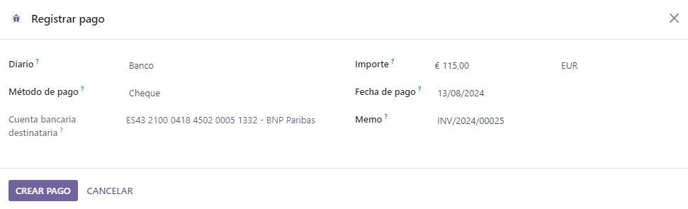

Cheques¶
Hay dos maneras de gestionar pagos que se recibieron en Odoo, ya sea desde las cuentas por cobrar o si evita el proceso de conciliación.
Recomendamos que use cuentas pendientes ya que su cuenta bancaria se mantiene al día y correcta solo cuando puede tomar en cuenta cheques que no se han cambiado.
Nota
Al final del proceso ambos métodos producen los mismos datos en su contabilidad. Sin embargo, si tiene cheques que no ha cambiado, el método Cuentas por cobrar registra estos cheques en la cuenta Recibos por cobrar. De igual manera, los fondos aparecen en su cuenta bancaria sin importar si se conciliaron o no, ya que el valor del banco se refleja en el momento que recibe su estado de cuenta bancaria.
Ver también
Cuentas pendientes
Método 1: cuentas pendientes¶
Cuando recibe un cheque, usted registra el pago mediante un cheque en la factura. Después, cuando a su cuenta bancaria se le abone la cantidad del cheque, usted reconcilia el pago y el estado de cuenta para que la cantidad se mueva de la cuenta Pagos pendientes a la cuenta Banco.
Truco
Puede crear un nuevo método de pago llamado Cheques si quiere identificar este tipo de pagos de inmediato. Para hacerlo, vaya a , haga clic en la pestaña Pagos entrantes y Agregue una línea. Como Método de pago seleccione Manual, ingrese Cheques como nombre y, finalmente, haga clic en Guardar.
Método 2: ignorar la conciliación¶
Cuando recibe un cheque, usted registra un pago en la factura relacionada. Después, la cantidad se mueve de Cuenta por cobrar a la cuenta Banco, lo cual se salta el proceso de conciliación y crea solo un asiento contable.
Para lograrlo, usted debe realizar la misma configuración que le presentamos a continuación. Vaya a . Haga clic en la pestaña Pagos entrantes y después Agregue una línea. Seleccione Manual como Método de pago, e ingrese Cheques como el Nambre. Haga clic en el botón para alternar el menú, seleccione Cuenta de recibos pendientes, y en la columna Cuenta de recibos pendientes seleccione la cuenta Banco para el método de pago Cheques.

Registro de pagos¶
Una vez que reciba el cheque de un cliente, vaya a la factura relacionada (, y haga clic en Registrar pago. Llene la información de pago:
Diario: Banco;
Método de pago: Manual (o Cheques si creó un método de pago específico);
Memorando: ingrese el número de cheque;
Haga clic en Crear pago.
Los asientos bancarios generados serán diferentes según el método de registro de pago que se eligió.
Asientos contables¶
Cuentas pendientes¶
La factura se marca como En proceso de pago tan pronto como se registra el pago. Esta operación producirá el siguiente asiento de diario:
Cuenta |
Conciliación de estados de cuenta bancarios |
Débito |
Crédito |
|---|---|---|---|
Cuenta a cobrar |
100.00 |
||
Documentos pendientes |
100.00 |
Después, ya que reciba los estados de cuenta bancarios, vincule ese estado de cuenta con el cheque que está en la cuenta de Recibos pendientes, lo que producirá el siguiente asiento de diario:
Cuenta |
Conciliación de estados de cuenta bancarios |
Débito |
Crédito |
|---|---|---|---|
Documentos pendientes |
X |
100.00 |
|
Banco |
100.00 |
Si elige este enfoque para gestionar los cheques recibidos, obtendrá la lista de cheques que no se han cambiado en la cuenta Recibos pendientes (a la que puede entrar desde el libro mayor general, por ejemplo).
Ignorar el paso de conciliación¶
La factura se marca como Pagado tan pronto como se registre el cheque.
Con este enfoque, no se tendrá que usar la cuenta de recibos pendientes, lo que significa que solo obtendrá un asiento de diario en sus libros y se saltará el paso de conciliación:
Cuenta |
Conciliación de estados de cuenta bancarios |
Débito |
Crédito |
|---|---|---|---|
Cuenta a cobrar |
X |
100.00 |
|
Banco |
100.00 |